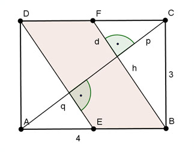

Pythagoras Aufgabe 86 Berechnen Sie die Größe der farbigen Fläche A in mm².  Satz von Pythagoras im Dreieck ACD: AC² = AD² + DC² AC² = 3² mm² + 4² mm² = 25 mm² |√ AC = 5 mm Kathetensatz im Dreieck FBC: BC² = AC * p | :AC BC² p = ----- AC 3² p = ---- 5 p = 1,8 mm q = 5 mm - 1,8 mm = 3,2 mm hParallelogramm = 5 mm - 2 * 1,8 mm = 1,4 mm Satz von Pythagoras im Dreieck BCH: BC² = h² + p² |-p² h² = BC² - p² h² = 3² mm² - 1,8² mm² = 5,76 mm² |√ h = 2,4 mm Höhensatz im Dreieck FBC: p² = h * d 1,8² = 2,4 * d |:2,4 d = 1,35 mm BE = h + d BE = 2,4 mm + 1,35 mm = 3,75 mm A = hParallelogramm * BE A = 1,4 mm * 3,75 mm = 5,25 mm²